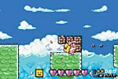

■
ジャンル：アクション
■
発売予定日：2002年1月
■
希望小売価格：未定
突然の大嵐でテンカイからおっこちてしまったテンカイの王子スタフィー。そんなスタフィーが宝物を集めながら、テンカイ目指して海を冒険するアクションゲームがこの『伝説のスタフィー』だ。洞窟、氷の海、珊瑚、鯨、沈没船などなど、楽しそうだけどちょっと怖そうな全9ステージを、海の仲間たちに助けてもらいながら進んでいこう。ゲーム中に出会った仲間は図鑑に登録されるぞ！ キミは果たして、すべての仲間と出逢うことができるかな？

大嵐の後の海は、なぜか乱暴者だらけになってしまいました。どうやらそう簡単にはテンカイに戻れそうもありませんよ！
スタフィーをはじめ、仲間や敵キャラクターたちはとってもキュート！敵だからと嫌わないで、じーっと見てみよう。彼らの意外なカワイイ表情に、ついついグッと来てしまうかも!?
2001 Nintendo